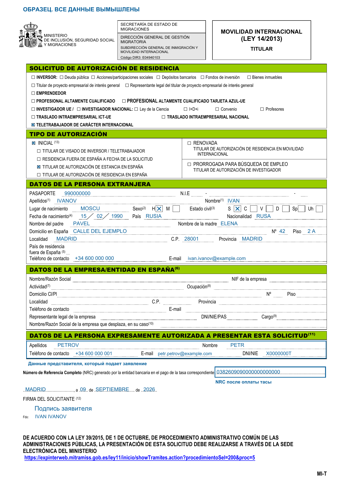

Документы
Formulario MIT для ВНЖ номада в Испании: бланк и заполнение
Помощь в подаче документов на ВНЖ Испании: t.me/ola_espana
Гайд по заполнению заявления Formulario MIT (MI-T) для ВНЖ цифрового кочевника в Испании. Для основного заявителя, который подаётся по контракту или по найму.
Бланк MI-T на сайте министерства.
Как заполнить
- Заполните форму на испанском; имя и фамилию укажите латиницей, как в загранпаспорте. Отметьте Teletrabajador de carácter internacional - цифровой кочевник, затем Inicial - первичная подача или Renovada - продление. При первичной подаче также отметьте основание текущего пребывания. Блок данных компании в Испании для номада не заполняется.
- Если заявление подает представитель, в блоке Datos de la persona expresamente autorizada a presentar esta solicitud укажите данные того, кто подает: фамилию, имя, телефон, электронную почту и DNI/NIE. Для подачи через представителя также приложите документ о его полномочиях.
- После оплаты тасы 790 038 впишите NRC из подтверждения оплаты в строку Número de Referencia Completo (NRC) внизу формы. Это код оплаченной тасы, не номер самого бланка.
- Поставьте дату и подпись заявителя. Можно подписать электронной подписью или от руки и отсканировать.
Пример
Первичная подача из Испании во время краткосрочного пребывания, через представителя. Заявитель - Иван Иванов, представитель - Петр Петров. NIE у заявителя еще нет, поэтому поле оставлено пустым. Все данные, включая NRC, вымышленные; подпись обозначена условно.
